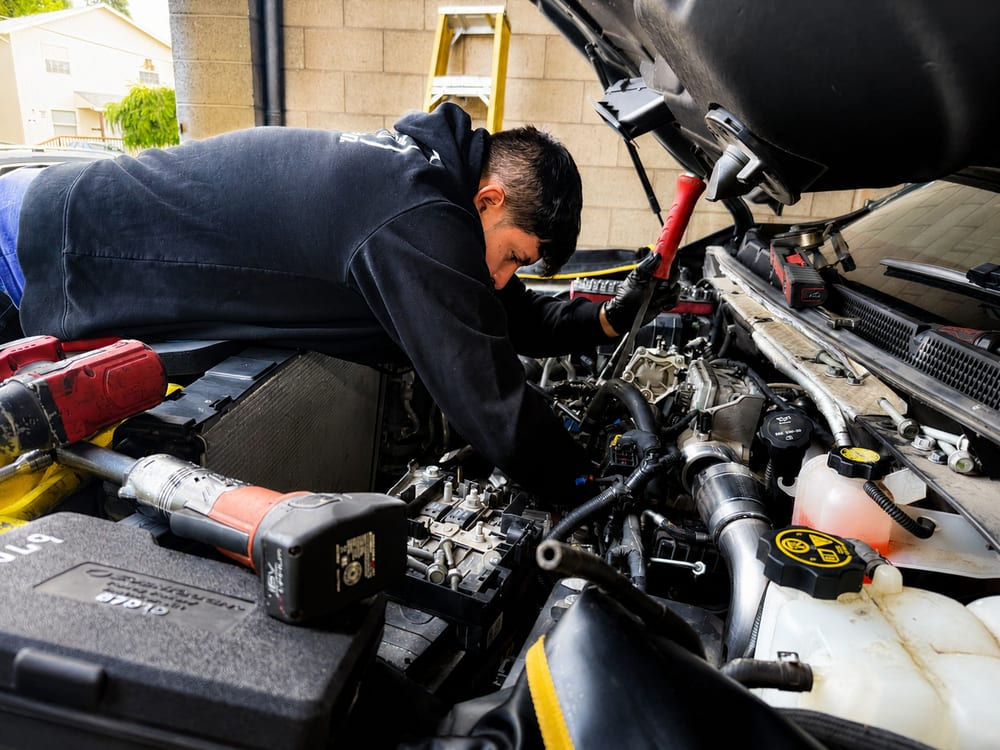

When your vehicle needs serious engine repair, whether it's a head gasket, timing chain, or complete rebuild, you want a shop that tells you the truth about whether it's worth fixing.

Before we quote any major engine work, we run compression and leak-down tests so you know exactly what's wrong. If a repair doesn't make financial sense for your vehicle, we'll tell you that too.
A customer was driving their 2016 Lexus when it started smoking. Before they could get it off the road, the engine seized. A seized engine is usually the worst-case scenario, and plenty of shops would open the conversation with a five-figure rebuild quote.
We went and picked the car up ourselves out in Battleground, then walked the owner through the honest math: on many Japanese vehicles, tearing down a seized block costs more than installing a low-mileage imported JDM engine, a complete, healthy motor with a fraction of the miles. That's the route we took, and it's why this car is getting an engine swap instead of a goodbye.
That's how we approach every major engine decision: what does this vehicle need, and what's the smartest way for this owner to pay for it.
Low-mileage JDM and quality remanufactured engines installed when a rebuild doesn't pencil out.
Complete rebuilds for engines worth saving, covering bearings, rings, gaskets, and machine work.
Blown head gaskets replaced with machined surfaces and proper torque procedures.
Stretched chains, guides, and tensioners replaced before they take the whole engine with them.
Valve cover, oil pan, rear main, and timing cover leaks fixed at the source.
Worn or collapsed mounts replaced to stop driveline clunk and engine movement.
It depends on the repair cost against the vehicle's value and condition. A $2,500 repair on a solid truck you own outright often beats a $600 monthly car payment. We'll walk through the math with you honestly, even when the answer costs us the job.
A used engine is cheapest up front, a remanufactured unit carries the strongest warranty, a rebuild keeps your original block, and for many Japanese vehicles a low-mileage JDM import beats all three on value. The right call depends on your vehicle, budget, and how long you plan to keep it. We'll lay out the options with real numbers.
Yes. We regularly retrieve customer vehicles that can't be driven in, even from outside the county. Call us and we'll figure out how to get your car to the shop.
Head gaskets and timing work typically take 2–4 days. Rebuilds and replacements run about a week depending on machine shop and parts lead times. We'll give you a realistic timeline before we start.
Compression testing and a straight answer before any major work. That's a promise.
Call (503) 867-0609